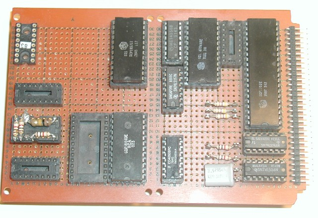

This a combined CPU/Video/Keyboard card. The right side of the card is the basic 1802 and support circuits. The bottom left contains an 1861 video subsystem and the upper left contains the parallel keyboard interface. This card was made obsolete by a new 6845 based video card.
